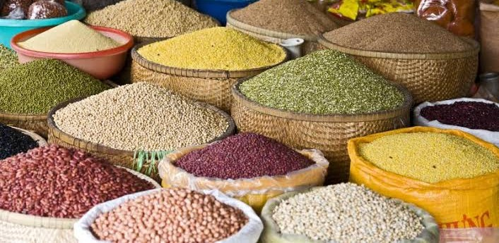

We connect what matters.
From products we produce to goods that move through our markets, we connect production with opportunity through practical, reliable and commercially focused trade.
From products we produce to goods that move through our markets, we connect production with opportunity through practical, reliable and commercially focused trade.
Trade
Jubesa Farm Tanzania Limited engages in wholesale and retail trade across agricultural products, garments and commercial goods. We connect products with the markets they serve, creating opportunities across the wider commercial value chain.

What we trade
Our trading activities extend across agricultural products, garments and commercial goods, creating connections between production, distribution and the customers they ultimately serve.
Connecting agricultural production with wholesale and retail opportunities across the market.
Moving agricultural produce from productive sources directly toward the needed markets.
Supporting the movement of agricultural products from production to commercial markets.
Facilitating wholesale and retail trade for diverse clothing and apparel products.
Trading a wide range of commercial products through practical market connections.
Connecting stylish garments and related products with active customers and markets.
Commercial operations
Effective trade is about more than moving products. It is about understanding supply, connecting demand and creating value throughout the journey from source to customer.
Identifying products and opportunities that can create value within the commercial market.
Building practical connections between producers, suppliers, customers and markets.
Supporting the movement of products through the commercial value chain toward their intended markets.
Turning commercial connections into sustainable opportunities for businesses, customers and partners.